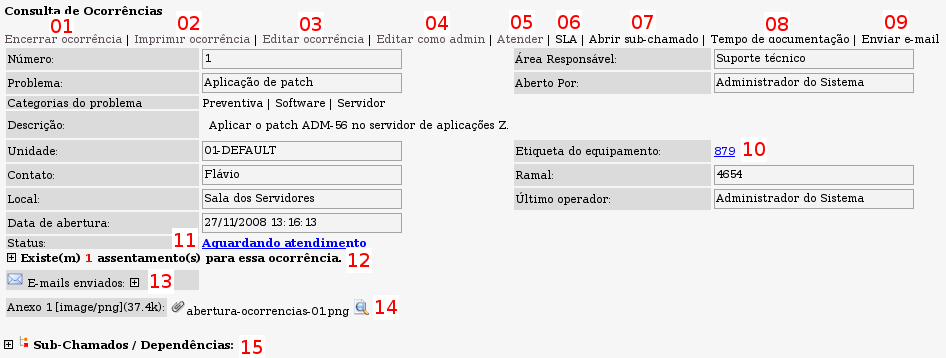

Detalhamento do chamado:

Tela típica de exibição detalhada de uma ocorrência - versão 2.0rc3
A tela acima, exibe as informações de uma ocorrência de forma detalhada. Nem todas as opções apresentadas nessa tela são visíveis a todos os usuários. As opções visíveis dependem do nível de permissão do operador/usuário logado ou do contexto do chamado no sistema.
Veremos a seguir cada uma das opções enumeradas acima. As demais informações já foram detalhadas na página que trata sobre a
abertura de chamados.
Novo:
Visibilidade dos assentamentos
Na versão
2.0RC4 é possível marcar cada assentamento como
Privado ou não. Assentamentos privados não são visíveis pelo usuário final (Para os casos onde o usuário final tenha acesso às informações da ocorrência). É possível alterar qualquer assentamento como privado ou não a qualquer momento através da tela de edição das ocorrências.
Novo:
URL Global para acesso às ocorrências por usuário de nível "Somente abertura";
[
A partir da versão 2.0RC4] Por definição, o usuário de nível "Somente abertura" só tem acesso às informações das ocorrências abertas por ele mesmo no sistema. Através da URL global é possível permitir o acesso, para usuário somente abertura, a qualquer ocorrência no sistema. Uma URL global é gerada automaticamente para cada nova ocorrência aberta no sistema e é visível à área técnica na tela de detalhes da ocorrência. Para ocorrências existentes antes da implementação dessa função, basta que o operador clique no link "Gerar link global" (na tela de detalhes da ocorrência) para que o link seja gerado.
Novo: Além das informações citadas,
a partir da versão 2.0RC5, há também um campo referente à prioridade de atendimento do chamado. Para obter maiores informações sobre esse campo acesse a documentação referente a
Prioridades de atendimento.
Para que o usuário "Somente abertura" consiga ter acesso à ocorrência através da URL global, é necessário que o mesmo esteja logado no sistema.
01 - Opção para o encerramento da ocorrência. Ao clicar nesse link, será chamada a tela de encerramento para esse chamado.
02 - Opção para impressão da ocorrência. Ao clicar nesse link, uma nova janela (ou aba) será aberta com as informações da ocorrência formatadas para impressão (tipo RAT), possibilitando que o técnico tenha os dados da ocorrência em papel e podendo recolher a assinatura do solicitante após a conclusão do atendimento.
03 - Opção para edição da ocorrência. Ao clicar nesse link será possível alterar ou adicionar informações ao chamado.
04 - Opção para edição da ocorrência com privilégios de administrador. Ao clicar nesse link, além de possibilitar a alteração das informações da ocorrência, também é possível excluir arquivos que estejam anexados na mesma e desvincular ocorrências relacionadas. Essa opção só fica disponível para usuários com privilégios de administrador do sistema.
05 - Opção para atendimento da ocorrência. Ao clicar nesse link, será exibida a tela para marcar a ocorrência como "Em Atendimento". Ao confirmar essa operação, a ocorrência ficará vinculada ao operador logado no sistema e estará sob sua responsabilidade de atendimento.
06 - Opção para obter as informações sobre os tempos esperados para o chamado. Ao clicar nesse link será exibida uma tela com as informações de tempo de resposta e solução esperados para a ciclo de vida do chamado no sistema. Os tempos de respostas e solução variam de acordo com a definições do ambiente e sistema.
07 - Opção que possibilita a abertura de sub-chamados para a ocorrência em questão. Ao clicar nesse link, será aberta a tela de abertura de chamados informando que o novo chamado será um sub-chamado da ocorrência já aberta. O Ocomon trata os sub-chamados como dependências que precisam ser solucionadas para permitir que o chamado origem seja concluído. Não há limite para quantidade de sub-chamados. Podem ser criados inclusive sub-chamados de sub-chamados quantas vezes forrem necessárias.
08 - Opção para exibição do tempo de documentação do chamado. Ao clicar nesse link será exibida uma tela com as informações dos tempos de documentação do chamado por cada técnico e status assumidos pela ocorrência até o instante atual. O tempo de documentação do chamado é todo o tempo gasto nas edições do chamado do sistema, desde a sua criação até o seu encerramento.
Por exemplo: o tempo gasto deste a chamada da tela de encerramento do chamado até o momento em que é clicado no botão de encerrar (após se ter digitado as informações necessárias) é registrado como tempo de documentação.
09 - Opção que permite o envio de e-mails vinculados à ocorrência em questão. Ao clicar nesse link, será aberto um formulário de envio de e-mail. O(s) destinatário(s) poderá(ão) se selecionado(s) a partir de listas pré-cadastradas ou então informado(s) diretamente no formulário. O texto da mensagem também poderá ser selecionado a partir de modelos pré-cadastrados ou então criado na hora.
10 - Opção para visualizar as informações do equipamento associado à ocorrência em questão. Ao clicar neste link serão exibidas todas as informações registradas sobre o equipamento para qual a ocorrência foi aberta.
11 - Opção que permite visualizar o histórico de status do sistema. Ao clicar nesse link será exibida uma tela com a relação de todos os status que a ocorrência já teve e quanto tempo esteve em cada um deles.
12 - Essa mensagem indica quantos informações extras foram acrescentas à ocorrência desde a sua abertura. Essas informações podem ser exibidas ou ocultadas clicando no ícone com o sinal de "+" ou "-".
13 - Essa mensagem informa quantos e-mails foram enviados através da função Enviar e-mail (
item 09). Todas as mensagens ficam registradas e associadas ao chamado podendo ser listadas ou ocultadas clicando na mensagem
E-mails enviados. Para ter a visualização detalhada de cada mensagem enviada, basta clicar na mensagem específica.
14 - Listagem de arquivos anexos ao chamado. Para realizar o download dos arquivos, basta clicar sobre o mesmo. Se o arquivo anexado for uma imagen, é possível visualiza-la diretamente no sistema sem a necessidade de realizar o download. Para isso basta clicar no ícone em forma de lupa que aparece ao lado direito do nome do arquivo.
15 - Mensagem que informa a existência de sub-chamados da ocorrência em questão. Para visualizar ou ocultar a listagem, basta clicar no ícone em forma de "+" ou "-". Para ter acesso detalhado a cada sub-chamado basta clicar no número do mesmo.